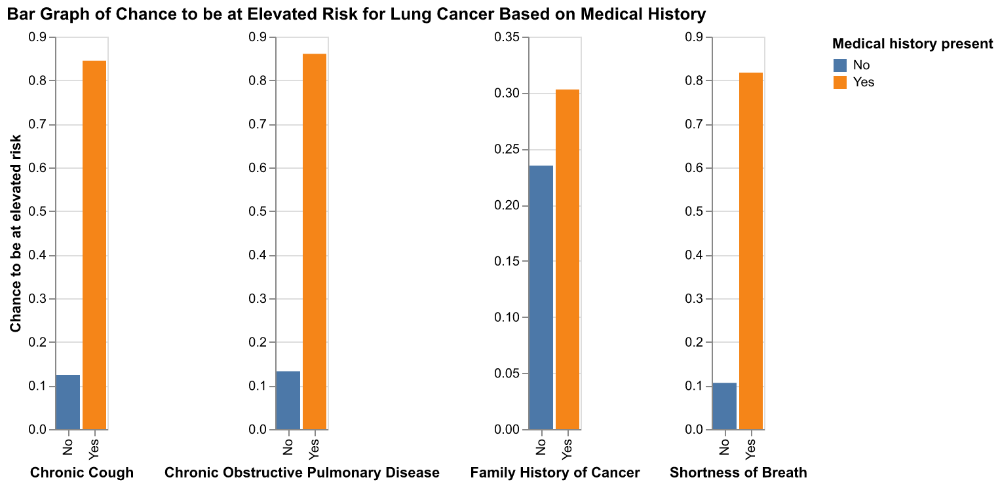

Medical history
The figure is a bar graph of lung cancer risk faceted by certain aspects of previous medical history. Chronic cough, chronic obstructive pulmonary disease (COPD), a family history of cancer, and shortness of breath are all correlated with a higher risk of lung cancer. Chronic cough, COPD, and shortness of breath show an especially high correlation, with the chance to be at elevated risk going up 70% with any of those conditions present. This data shows that personal medical history is more important than family medical history, although both appear to have an effect on lung cancer risk.

If you find yourself in any of the higher-risk categories shown (older age and/or medical history), it could be a good idea to get regular cancer screening. Early diagnosis of cancer is one of the most important factors in treatment, and could be the difference between a controllable and terminal illness.